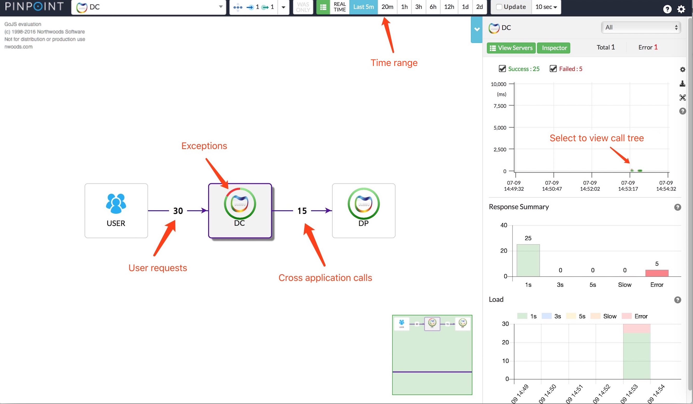
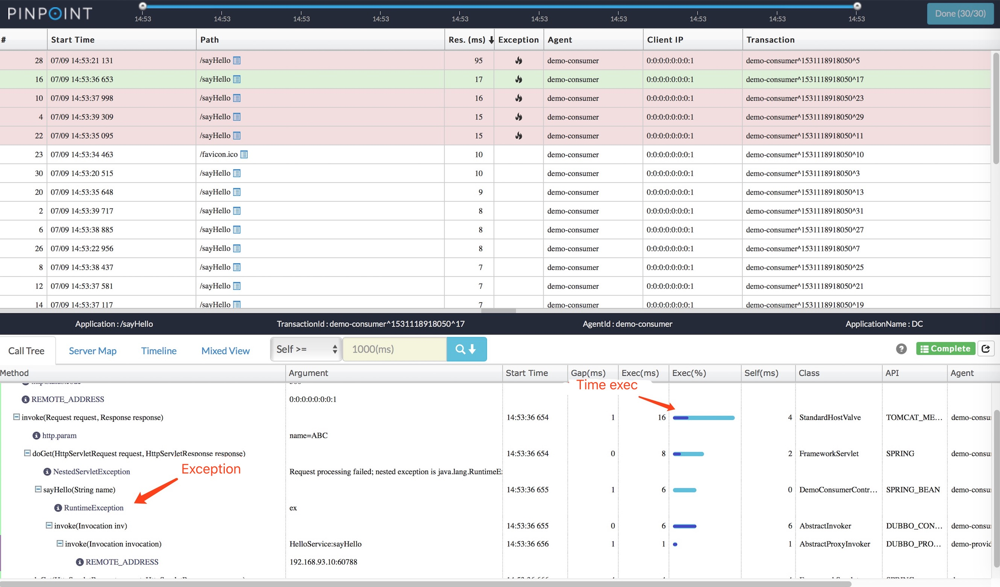
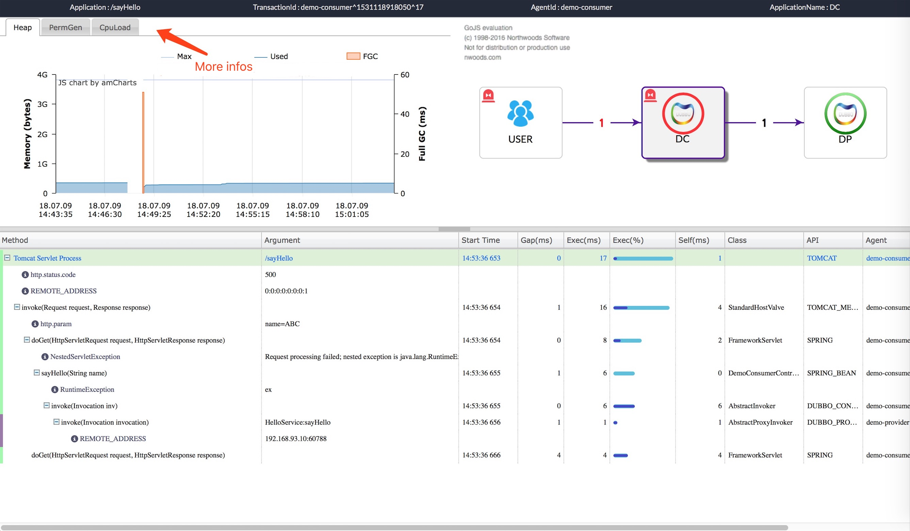

Tracking with Pinpoint
After using Dubbo to serve or integrate applications, assuming that a service backstage log shows an exception and that the service is invoked by multiple applications, it is often difficult to determine which application is called, and what is the cause of the problem, so we need a set of distributed tracking systems to quickly locate the problem. Pinpoint can help us quickly locate problems (of course, there are more than one solution).
What is Pinpoint
Pinpoint is an APM (Application Performance Management) tool for large-scale distributed systems written in Java. Inspired by Dapper, Pinpoint provides a solution to help analyze the overall structure of the system and how components within them are interconnected by tracing transactions across distributed applications.
You should definitely check Pinpoint out If you want to
understand your application topology at a glance monitor your application in Real-Time gain code-level visibility to every transaction install APM Agents without changing a single line of code have minimal impact on the performance (approximately 3% increase in resource usage)
ServerMap
Understand the topology of any distributed systems by visualizing how their components are interconnected. Clicking on a node reveals details about the component, such as its current status, and transaction count.
Realtime Active Thread Chart
Monitor active threads inside applications in real-time.
Request/Response Scatter Chart
Visualize request count and response patterns over time to identify potential problems. Transactions can be selected for additional detail by dragging over the chart.
CallStack
Gain code-level visibility to every transaction in a distributed environment, identifying bottlenecks and points of failure in a single view.
Inspector
View additional details on the application such as CPU usage, Memory/Garbage Collection, TPS, and JVM arguments.
Supported Modules (last updated 2018/04/01)
- JDK 6+
- Tomcat 6/7/8, Jetty 8/9, JBoss EAP 6, Resin 4, Websphere 6/7/8, Vertx 3.3/3.4/3.5
- Spring, Spring Boot (Embedded Tomcat, Jetty)
- Apache HTTP Client 3.x/4.x, JDK HttpConnector, GoogleHttpClient, OkHttpClient, NingAsyncHttpClient
- Thrift Client, Thrift Service, DUBBO PROVIDER, DUBBO CONSUMER
- ActiveMQ, RabbitMQ
- MySQL, Oracle, MSSQL, CUBRID,POSTGRESQL, MARIA
- Arcus, Memcached, Redis, CASSANDRA
- iBATIS, MyBatis
- DBCP, DBCP2, HIKARICP
- gson, Jackson, Json Lib
- log4j, Logback
Pinpoint and Dubbo
Quickstart Pinpoint
Quick start（No neet to start TestApp）
Dubbo demo
Create API module
pom.xml
<?xml version="1.0" encoding="UTF-8"?>
<project xmlns="http://maven.apache.org/POM/4.0.0"
xmlns:xsi="http://www.w3.org/2001/XMLSchema-instance"
xsi:schemaLocation="http://maven.apache.org/POM/4.0.0 http://maven.apache.org/xsd/maven-4.0.0.xsd">
<modelVersion>4.0.0</modelVersion>
<groupId>com.example</groupId>
<artifactId>demo-api</artifactId>
<version>0.0.1-SNAPSHOT</version>
</project>
Create API interface：
package com.example.demoapi;
public interface HelloService {
String sayHello(String name);
}
Dubbo provider
pom.xml
<?xml version="1.0" encoding="UTF-8"?>
<project xmlns="http://maven.apache.org/POM/4.0.0" xmlns:xsi="http://www.w3.org/2001/XMLSchema-instance"
xsi:schemaLocation="http://maven.apache.org/POM/4.0.0 http://maven.apache.org/xsd/maven-4.0.0.xsd">
<modelVersion>4.0.0</modelVersion>
<groupId>com.example</groupId>
<artifactId>demo-provider</artifactId>
<version>0.0.1-SNAPSHOT</version>
<packaging>jar</packaging>
<name>demo-provider</name>
<parent>
<groupId>org.springframework.boot</groupId>
<artifactId>spring-boot-starter-parent</artifactId>
<version>2.0.3.RELEASE</version>
<relativePath/> <!-- lookup parent from repository -->
</parent>
<properties>
<project.build.sourceEncoding>UTF-8</project.build.sourceEncoding>
<project.reporting.outputEncoding>UTF-8</project.reporting.outputEncoding>
<java.version>1.8</java.version>
</properties>
<repositories>
<repository>
<id>sonatype-nexus-snapshots</id>
<url>https://oss.sonatype.org/content/repositories/snapshots</url>
<releases>
<enabled>false</enabled>
</releases>
<snapshots>
<enabled>true</enabled>
</snapshots>
</repository>
</repositories>
<dependencies>
<dependency>
<groupId>org.springframework.boot</groupId>
<artifactId>spring-boot-starter</artifactId>
</dependency>
<dependency>
<groupId>com.alibaba.boot</groupId>
<artifactId>dubbo-spring-boot-starter</artifactId>
<version>0.2.0</version>
</dependency>
<dependency>
<groupId>com.example</groupId>
<artifactId>demo-api</artifactId>
<version>0.0.1-SNAPSHOT</version>
</dependency>
<dependency>
<groupId>org.springframework.boot</groupId>
<artifactId>spring-boot-starter-test</artifactId>
<scope>test</scope>
</dependency>
</dependencies>
<build>
<plugins>
<plugin>
<groupId>org.springframework.boot</groupId>
<artifactId>spring-boot-maven-plugin</artifactId>
</plugin>
</plugins>
</build>
</project>
HelloServiceinterface：
package com.example.demoprovider.provider;
import com.alibaba.dubbo.config.annotation.Service;
import com.example.demoapi.HelloService;
@Service(version = "${demo.service.version}",
application = "${dubbo.application.id}",
protocol = "${dubbo.protocol.id}",
registry = "${dubbo.registry.id}")
public class HelloServiceImpl implements HelloService {
static int i = 0;
@Override
public String sayHello(String name) {
i++;
if (i % 3 == 0) {
throw new RuntimeException("ex");
}
return "Hello " + name + "!";
}
}
- Spring Boot bootstrap：
package com.example.demoprovider;
import org.springframework.boot.SpringApplication;
import org.springframework.boot.autoconfigure.SpringBootApplication;
@SpringBootApplication
public class DemoProviderApplication {
public static void main(String[] args) {
SpringApplication.run(DemoProviderApplication.class, args);
}
}
application.properties：
# Spring boot application
spring.application.name = dubbo-provider-demo
server.port = 9090
management.port = 9091
# Service version
demo.service.version = 1.0.0
# Base packages to scan Dubbo Components (e.g @Service , @Reference)
dubbo.scan.basePackages = com.example.demoprovider
# Dubbo Config properties
## ApplicationConfig Bean
dubbo.application.id = dubbo-provider-demo
dubbo.application.name = dubbo-provider-demo
## ProtocolConfig Bean
dubbo.protocol.id = dubbo
dubbo.protocol.name = dubbo
dubbo.protocol.port = 12345
## RegistryConfig Bean
dubbo.registry.id = my-registry
dubbo.registry.address = N/A
Dubbo consumer
pom.xml
<?xml version="1.0" encoding="UTF-8"?>
<project xmlns="http://maven.apache.org/POM/4.0.0" xmlns:xsi="http://www.w3.org/2001/XMLSchema-instance"
xsi:schemaLocation="http://maven.apache.org/POM/4.0.0 http://maven.apache.org/xsd/maven-4.0.0.xsd">
<modelVersion>4.0.0</modelVersion>
<groupId>com.example</groupId>
<artifactId>demo-consumer</artifactId>
<version>0.0.1-SNAPSHOT</version>
<packaging>jar</packaging>
<name>demo-consumer</name>
<parent>
<groupId>org.springframework.boot</groupId>
<artifactId>spring-boot-starter-parent</artifactId>
<version>2.0.3.RELEASE</version>
<relativePath/> <!-- lookup parent from repository -->
</parent>
<properties>
<project.build.sourceEncoding>UTF-8</project.build.sourceEncoding>
<project.reporting.outputEncoding>UTF-8</project.reporting.outputEncoding>
<java.version>1.8</java.version>
</properties>
<repositories>
<repository>
<id>sonatype-nexus-snapshots</id>
<url>https://oss.sonatype.org/content/repositories/snapshots</url>
<releases>
<enabled>false</enabled>
</releases>
<snapshots>
<enabled>true</enabled>
</snapshots>
</repository>
</repositories>
<dependencies>
<dependency>
<groupId>org.springframework.boot</groupId>
<artifactId>spring-boot-starter-web</artifactId>
</dependency>
<dependency>
<groupId>com.alibaba.boot</groupId>
<artifactId>dubbo-spring-boot-starter</artifactId>
<version>0.2.0</version>
</dependency>
<dependency>
<groupId>com.example</groupId>
<artifactId>demo-api</artifactId>
<version>0.0.1-SNAPSHOT</version>
</dependency>
<dependency>
<groupId>org.springframework.boot</groupId>
<artifactId>spring-boot-starter-test</artifactId>
<scope>test</scope>
</dependency>
</dependencies>
<build>
<plugins>
<plugin>
<groupId>org.springframework.boot</groupId>
<artifactId>spring-boot-maven-plugin</artifactId>
<configuration>
<classifier>exec</classifier>
</configuration>
</plugin>
</plugins>
</build>
</project>
@ReferenceinjectionHelloService
package com.example.democonsumer.controller;
import com.alibaba.dubbo.config.annotation.Reference;
import com.example.demoapi.HelloService;
import org.springframework.web.bind.annotation.RequestMapping;
import org.springframework.web.bind.annotation.RequestParam;
import org.springframework.web.bind.annotation.RestController;
@RestController
public class DemoConsumerController {
@Reference(version = "${demo.service.version}",
application = "${dubbo.application.id}",
url = "dubbo://<Real IP Address>:12345")
private HelloService helloService;
@RequestMapping("/sayHello")
public String sayHello(@RequestParam String name) {
return helloService.sayHello(name);
}
}
- Spring Boot bootstrap:
package com.example.democonsumer;
import org.springframework.boot.SpringApplication;
import org.springframework.boot.autoconfigure.SpringBootApplication;
@SpringBootApplication
public class DemoConsumerApplication {
public static void main(String[] args) {
SpringApplication.run(DemoConsumerApplication.class, args);
}
}
application.properties:
# Spring boot application
spring.application.name=dubbo-consumer-demo
server.port=8080
management.port=8081
# Service Version
demo.service.version=1.0.0
# Dubbo Config properties
## ApplicationConfig Bean
dubbo.application.id=dubbo-consumer-demo
dubbo.application.name=dubbo-consumer-demo
## ProtocolConfig Bean
dubbo.protocol.id=dubbo
dubbo.protocol.name=dubbo
dubbo.protocol.port=12345
Using Pinpoint-agent to start Dubbo provider and Dubbo consumer
- Maven clean package
mvn clean package
- Start provider
java -jar -javaagent:$AGENT_PATH/pinpoint-bootstrap-$VERSION.jar -Dpinpoint.agentId=demo-provider -Dpinpoint.applicationName=DP target/demo-provider-0.0.1-SNAPSHOT.jar
- Start consumer
java -jar -javaagent:$AGENT_PATH/pinpoint-bootstrap-$VERSION.jar -Dpinpoint.agentId=demo-consumer -Dpinpoint.applicationName=DC target/demo-comsumer-0.0.1-SNAPSHOT-exec.jar
- Access the consumer address to simulate user requests
http://localhost:8080/sayHello?name=ABC
Using Pinpoint locate problems
Homepage

The user request here is double the number of requests for DubboProvider, because the favicon.ico icon request is recorded.
Call tree

Mixed view

Other
The example simply simulates the provision and call of Dubbo, and does not carry out the application of other middleware such as database. For detailed use, please refer to the Pinpoint document.